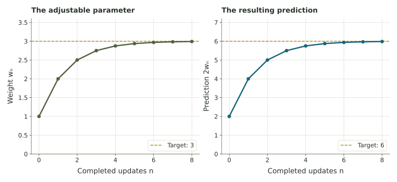

Training a predictor using feedback
Trace a toy predictor from one adjustable weight through a prediction, an error, and an update; compare strong and delayed responses.
Making a prediction is different from learning from its result
A calculator can repeat a fixed calculation without changing its rule. A learning process adds a return path: make a prediction, compare it with a target, and change an adjustable part before trying again. Here we can see that entire loop with a single number.
Let the input be 2, the target output be 6, and an adjustable weight be w. The prediction is \(\widehat y=2w\); the hat means “predicted value.” This one-weight example isolates an update step of a learning algorithm. More complex models use many adjustable weights and training examples.

Follow one attempt all the way through
Start with \(w_0=1\). The prediction is 2, so the error is 4. A quarter of that error is 1. Add it to the weight to get \(w_1=2\). The next prediction is therefore 4. We did not simply add the error to the prediction.
| Attempt | Current weight | Prediction | Error | Weight correction | Next weight |
|---|---|---|---|---|---|
| 0 | 1 | 2 | 4 | 1 | 2 |
| 1 | 2 | 4 | 2 | 0.5 | 2.5 |
| 2 | 2.5 | 5 | 1 | 0.25 | 2.75 |
| 3 | 2.75 | 5.5 | 0.5 | 0.125 | 2.875 |
Rearranging gives \(w_{n+1}=w_n+0.5(3-w_n)\). That is the same half-gap rule as the immediate greenhouse, with a weight target of 3. Different settings can share the same mathematics.
Your turn: use a weight of 2
Compare current and one-attempt-old errors
Replace 0.25 with a chosen step size α. The current rule is \(w_{n+1}=w_n+\alpha(6-2w_n)\). The delayed rule uses \(w_{n-1}\) inside the parentheses, with \(w_{-1}=w_0\). The current weight still receives the correction.
The graph shows predictions, while the table includes weights and the reported prediction used in each correction. Values are rounded for display; calculations keep precision.
- At α = 0.25, compare the current and delayed paths. Which reported error is still positive when the delayed prediction has reached 6?
- Use α = 0.75. Explain a current-error overshoot using the weight update.
- Use α = 0. Compare this with learning that changes a parameter.
What backpropagation contributes
A large neural network has many adjustable weights and a loss that summarizes prediction error. Backpropagation computes how that loss changes with each weight, working backward through the computations. An optimization rule uses those sensitivities to choose parameter updates. The flow of error information and the rule choosing the update are related but distinct tasks.
Our rule is chosen so its arithmetic is visible. It is not a universal formula for neural-network training. In the example, prediction uses the current weight without altering it; training adds the comparison and weight update around that pass. Changing parameters to fit one example does not guarantee useful predictions elsewhere.
Primary source: Rumelhart, Hinton, and Williams, “Learning representations by back-propagating errors” (1986).
Learning also depends on the quality of the evidence
Targets and examples can contain variation, bias, or measurement mistakes. A large response to one unusual example can follow noise rather than a reliable pattern. Multiple observations may help, but they need to represent the setting where the model will be used.
The optional Surprise, Information, and Cross-Entropy extension asks a related question: how can we score a prediction that assigns probabilities instead of a single number?